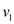
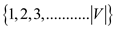
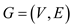

Consider the following graph to prove that simple algorithm does not produce correct result always.
• Assume that the first DFS is started at the point. Then the order of increasing finishing times is after the first DFS.
• If the original graph is given to the second DFS and the
vertices scanning is performed in the order of increasing finishing
time(that is,  is the
starting point), then the algorithm gives a SCC (Strongly connected
component) .
is the
starting point), then the algorithm gives a SCC (Strongly connected
component) .
• But this is incorrect result. The graph consists two strongly
connected components (SCCs) and .
.
Hence, the simpler algorithm may not always produce the correct results.
Consider a directed graph . In a
directed graph, the strongly connected relationship is an
equivalence relation.
. In a
directed graph, the strongly connected relationship is an
equivalence relation.
• Suppose, denotes the
transpose of component graph, then as per the equivalence relation,
and
will always
have the same strongly connected component.
• Thus, and have the same vertex sets and therefore, the vertex sets of and are the same.
• This implies that their edge sets are the same.
• Since, is the transpose of the graph G, has the edges that are reverse of edges in the G.
• C is the strongly connected component of G if and only if it is strongly connected component of
• The key property of component graph is as follows:
Consider G is a directed graph and is a transpose of the directed graph G.
Assume, directed graph G has the strongly connected components. That is,also have the same connected components. Consider has vertices.
However, for vertices x Ci
and y
Cj, if there is an edge (vi,
vj) in , then there
is an edge in the
component graph .
Ci
and y
Cj, if there is an edge (vi,
vj) in , then there
is an edge in the
component graph .
Proving :
Consider the above key property to prove the given equation.
• If there is an edge (x, y) in G for
xCi
and y
Cj, there is an edge (y, x) in
.
• Since, for xCi
and y
Cj and (x, y) in G, there is
an edge (vi, vj) in .
• Similarly, for xCi
and y
Cj and (y,x) in , there must
be an edge (vj, vi) in the component
graph of , .
• It is observed that the edges in the component graph of ,are reverse of edges in the component graph of G, .
• That is, by calculating transpose of , can be obtained.
Hence, for any directed graph ,
the transpose of the component graph G
T is the same as the component graph of
G . That is,
Algorithm to Compute the Component Graph of a Directed Graph
Considering directed graph for finding the algorithm which computes its connected components in time. For this it is first confirmed that all the components are connected by at least one edge between them.
Connected component or strongly connected component C of a graph G are those components in which for vertices set.
Such that for a pair of vertex (u, v) there would be the edges from u to v and v to u.
and.
It means in a connected component C for vertices u and v, u can be reached from v and vice versa. In more simple words it can be said there are edges in both the directions from u to v and from v to u.
Directed graph
Strongly connected graph
Procedures:
To create the algorithm the combination of two procedures can be used as:
One for creating the ordered set of all the vertices from different strongly connected components in the graph and the other one for getting the distinct strongly connected components from that set.
The output of the procedure should be considered to be the arrangement that yields the number of components that are strongly connected and having the vertex u for each u. Without losing its general form, suppose that is an integer that gets any value from the set.To calculate the time taken by the algorithm, considerdenotes the number of components that are strongly connected, containing vertex u, for itself. Construct the set T; it is a set retaining similar values many times.
The values that it contains are integers in the range from 1 to; the time taken in sorting these values is.
In the sorted multi-set T for each iteration an element x is found that is distinct from the one before it, add x to. It takes time in creating.
Complexity and explanation:
Construct the set having ordered pairs of edges of two different connected components
.
To construct this set intime by visiting or scanning all edges in the edge set E and searching theand for each edge. One thing to be noted about this set is that it would hold same objects more than once.
Construction of S, remove all elements that have the form. Alternatively, when S is constructed, do not put an element in S when an edge is to be found or which . Now, S has at most elements. In the repeating execution of sort the time taken in execution is. This is because the values being sorted are integers from 1 to.
In the set S, which is sorted already, each time an element is found that is not same as the element just before it adds elementto. It takes time to visit each and every element of S in this way, once S has been sorted.
That is why the total time that would be required to run the procedure would be equal to the sum of the time taken by each of the above procedures making it.
Algorithm:
The algorithm can be recapitulated as below: The procedure COMP-GRAPH finds graphs that are the components of the graph G. The procedure uses the procedures COUNTING-SORT and RADIX-SORT to sort the concerned sets.
Refer to the section 8.2 of the book for the earlier one and the section 8.3 for the later one.
COMP-GRAPH (G)
//store the contents of the set T to an array
1. Copy elements of multi-set T to an array A
//sort the array A and store the sorted result in array T.
// k is the number denoting total elements in the array.
2. COUNTING-SORT (A, T, k)
//make the set of ordered pairs of vertices from separate strongly connected
//components
3. for each edge
Construct a set S = (x, y)
Here
//remove the duplicates from S
4. for all
if
remove from S
//sort the result
5. RADIX-SORT (S, d)
6. add first content of S to ESCC
//insert distinct values in the resultant graph
7. for remaining
if
add p(x, y) to ESCC
The time taken in executing this algorithm would intuitively be equal to the time that has been taken in running the first part and the second part of the procedure. That is,
.
Create a graph from graph as follows:
• Replace the edges within each SCC by one simple, directed cycle.
• Identify the redundant edges between SCC’s and remove them.
• k edges within an SCC will have k vertices. Hence, a single directed cycle of k edges gives the k – vertex SCC with the fewest possible edges.
The algorithm to compute is as shown below:
1. First, identify all the strongly connected components SCC’s of G. It will take time using the SCC algorithm. Refer to section 22.5 in the textbook.
2. Next, construct the component graphusing the information from step 1. It will take . Refer to problem 22.5.5 in the textbook.
3. Initialize. It will take .
4. Consider each SCC of G. Let the vertices in the SCC be . The directed edges are added to . A simple directed cycle is formed by all the edges that include all vertices of the SCC. It will take .
5. For each edge (u,v) in the component graph , select any vertex x in u’s SCC and any vertex y in v’s SCC. Add the directed edge (x, y) to. It will take .
Hence, the total time taken is .
Semi connected graph: a graph G can be called as
semi-connected graph when all  pair of
vertices are reachable from each other (that is vertex u is
reachable from vertex v or vice versa).
pair of
vertices are reachable from each other (that is vertex u is
reachable from vertex v or vice versa).
Consider a graph having
pair of
vertices. Use following algorithm to check graph G is semi
connected or not.
CHECK-SEMICONNECTED (G)
1. Call STRONGLY-CONNECTED-COMPONENTS (G)
2. After that, construct strongly connected components of G that is.
3. Topologically sort the graph component that is .
4. for  to
E
to
E
5. if edges does not exist from  to
to
6. return False
7. return True
Refer section 22.5, of chapter 22 from the textbook for STRONGLY-CONNECTED-COMPONENTS (G).
Refer section 22.3, of chapter 22 from the textbook for DFS(G) and DFS-VISIT(G, u).
Explanation:
• At first call the function and then create strongly connected components of graph which are reachable from every vertex.
• After that, sort the components of graph.
• At last use for loop to check vertices form a linear chain by checking existence of edges from vertex i to i+1.
Proof of algorithm:
Strongly connected component (SCC): It is a maximal set of vertices of graph G, in which each pair of vertices are reachable from each other.
• In above CHECK-SEMICONNECTED algorithm strongly connected component are constructed.
• All vertices in graph maximal set of G are SCC. The vertices of SCC are reachable to each other. So after sorting when these vertices form a linear chain, then this graph is a semi-connected.
• The maximal set of G contains maximum vertices of G but does not contain all vertices. So there are some vertices which are not part of SCC.
Hence, it shows that the above algorithm is correct.
Time complexity:
• In CHECK-SEMICONNECTED algorithm a STRONGLY-CONNECTED-COMPONENTS function is called whose complexity is.
• One for loop is also used to traverse the all vertices which
take  time.
time.
Hence, time complexity of CHECK-SEMICONNECTED algorithm is .